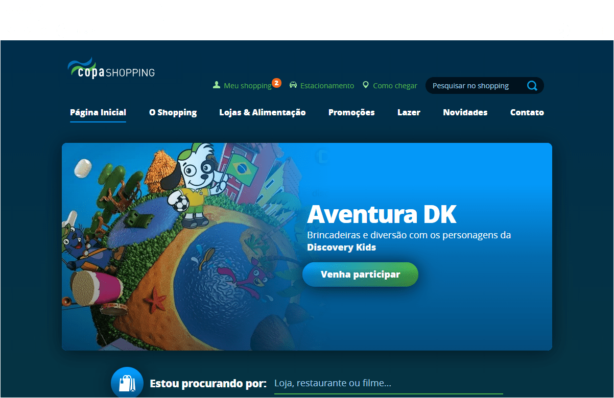
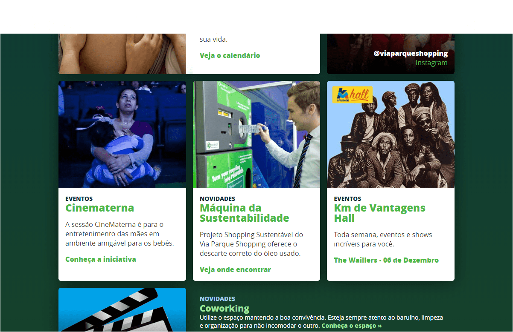
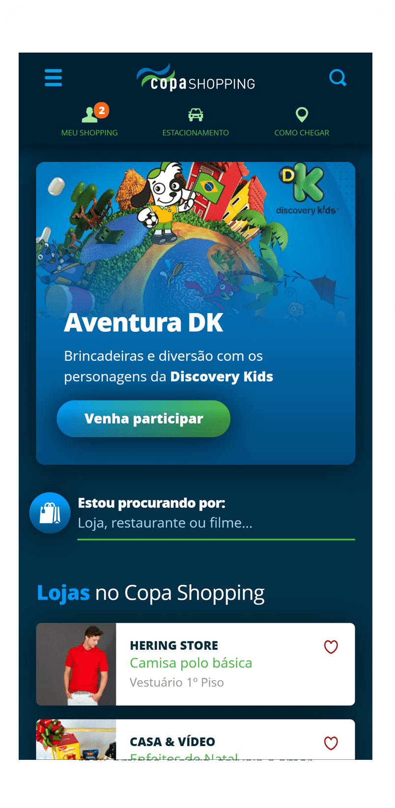

<div class="modal__wrapper">
<div class="modal__scroller">
<div class="modal__header">
<h2 class="modal__title">Copa Shopping</h2>
<h3 class="modal__tags">
<span class="modal__tag">UX/UI</span>
<span class="modal__tag">Front End</span>
</h3>
</div>
<div class="modal__content">
<div class="modal__editable">
<p>Lumis needed a fictional website to be able to showcase all of LumisXP's features to their prospect clients.</p>
<p>
I was responsible for developing the entire concept for this fictional shopping center, from its branding, to the logo and its website. I also tackled all the UX/UI design and front end of the website, that was meant to present major features as content personalization and real-time notifications to users.
</p>
<figure class="modal__image--full">

</figure>
<figure class="modal__image--full">

</figure>
<figure class="modal__image--full">

</figure>
<figure class="modal__image--small">

</figure>
</div>
</div>
</div>
</div>
